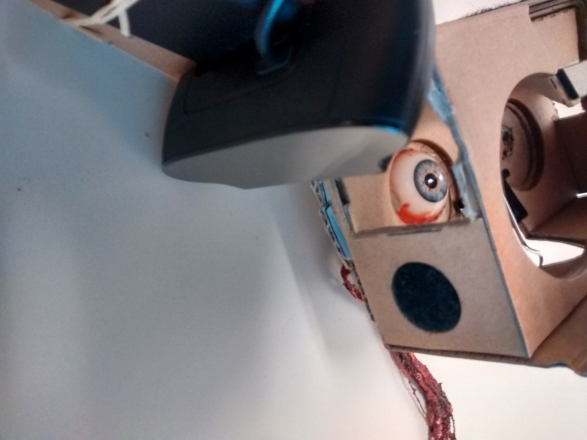

About 3 million Americans have glaucoma and a significant portion of them are the elderly who need help to take their eye drop medication. We design an automated eye-dropper that detects the patients eye, administers the eye drop and registers if the administration was successful. We modify a head-mounted display for this purpose and add an onboard computer that deals with the control processes.
Open-Box cardboard prototype of our device. Top-view of the eye from the device(Left) Camera looks at the eye from the side(Right)
To detect the patient's eye record a clip of the patient moving their eye. Because of the controlled nature of our setup we can compute the variance of the sequence of images and segment out the eye region. The variance can be color thresholded to give us a segmentation of the eye region. An example of the mean and variance is shown in the figure below.
Mean of the image sequence we get from the camera(Left). Variance of the image sequence(Right)
Example cropped eye region images
We want to detect eye blinks of the patient so that we can plan when to administer the eye drop and know if it was successfully delivered. To detect blinks we collect videos from 25 patients with three different eye colors at three different illumination conditions. We have a total of 75 videos each 200 frames long. We automatically annotate the frames(as open/close) by asking the participants to actively open or close their eyes and synchronizing the commands with the realtime video sequence. We crop out the eye region and train a classifier to classify each frame as open or close. We train this classifier using the annotated videos we collected and successfully detect blinks.
To control when and how much eye drops will be dispensed we design a motorized setup that can be controlled by the on-board computer. We 3D print the device and fix it on the head mounded device. We position the illumination such that the light from the LEDs gets total internally reflected and enters the camera. This illuminates the drop making it look as a bright white streak in the image. If we fit a line to this image using Hough Transform we get the trajectory of the water drop as shown in the figure below.
Trajectory of a water drop detected using Hough Line detection